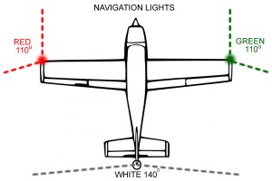
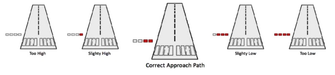
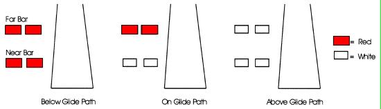

Why: You can’t fly at night without the night rating
Threshold Knowledge Test
Essential background Knowledge
Requirement for rating: (need PPL or CPL license, cannot do night rating with student pilot permit or recreation permit)
An applicant for a night rating shall have acquired in aeroplanes a minimum of 20 hours of pilot flight time which shall include a minimum of:
10 hours of night flight time including a minimum of:
5 hours dual flight time, including 2 hours of cross-country flight time,
5 hours solo flight time, including 10 takeoffs, circuits and landings, and
10 hours dual instrument time.
Credit for a maximum of five hours of the 10 hours of dual instrument time may be given for instrument ground time, provided that the total instrument time shall be in addition to the 10 hours night flight time in subparagraph 1 (i).
Requirement for the aircraft:
All instruments required for day VFR + FLAPS (F- fuses, L- landing light(when carrying a passenger),
A- anti-collision lights, P- position lights, S – source of electrical energy)
Position lights (Nav light):

Requirement for the aerodrome:
Tower:
White beacon flashes every 2-3 seconds
Runway:
Edge – white lights
Threshold – green / End of runway – red
Taxiway:
Edge – blue lights
Centerline – green lights
Hold short line – yellow lights
Obstruction:
red lights
PAPI

VASI

ARCAL:
Type K: High/Medium/Low light intensities, key microphone 7/5/3 times, last for 15min
Type J: key microphone 5times, give medium intensity aerodrome lights for 15min
Procedures
Preflight inspection:
Make sure aircraft chocks are removed
Make sure aircraft tie down ropes are untied
Make sure all lights are working
Engine startup:
Make sure no one is around
Taxi:
Make sure followed the yellow taxi line for wing tip clearance
At night, people tend to taxi faster because lack of visual reference, make sure taxi slow
Run-up:
When doing the run-up check, make sure aircraft is not creeping forward (Use parking brake)
Check full load (Turn every lights on and check for ammater)
Take-off:
When taking off, you lose visual reference because of dark sky, fly the instruments
Circuit:
Rectangular circuit-
High or low –
Cross-country:
Plan cross-country where your course passes over towns or highways
If engine fails at night, plan for emergency landing toward the lighted areas such as highways
Safety
Illusions:
Black hole effect: when there are no ground lights between your aircraft and the runway threshold
(you feel high causing you to approach low), use visual aids such as PAPI or VASI for the approach
Acceleration (you may feel aircraft’s nose is too high, you tend to push the nose down,
therefore, you climb shallower, it might be dangerous if there is an obstacle)
Autokinesis – if you look at the lights at night for a while, the lights appear to move.
Try not to fixate on the lights but rather scan different areas for a few seconds